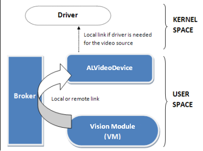
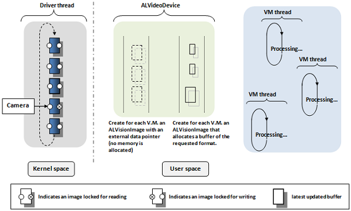
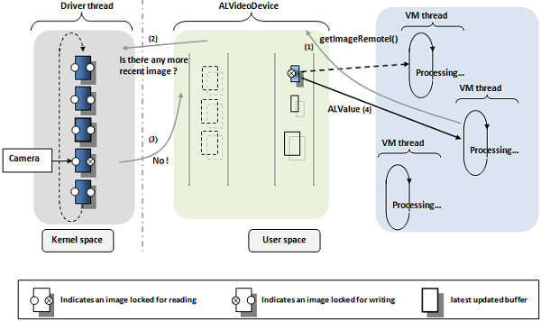
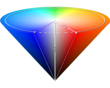

ALVideoDevice - Advanced¶
NAOqi Vision - Overview | API | Tutorials | ALVideoDevice - Advanced
See also
Details on ALVideoDevice¶
Architecture overview¶
This architecture is especially designed for NAO’s camera. Other video sources are using this architecture by emulating parts such as the driver in stream mode and its circular buffers management.
A Vision Module (V.M.) needs to work on a specific image format to perform its processing. So it subscribes to ALVideoDevice that will apply transformations on the stream to the required format (resolution and colorspace). If this format is the native one of the video source, a direct raw access can be asked (as an advanced feature, it implies some constraints).
How to change the video source¶
The video source used by ALVideoDevice is defined in the VideoInput.xml preference file. Right now, 3 different kinds of video sources are available:
- NaoCam: NAO’s camera (only available on NAO)
- SimulatorCam: what NAO sees in the simulator (only available on desktop)
- FileCam (beta version): replays grabbed sequences from any video device (available on NAO and desktop)
Note
To switch between cameras, use ALVideoDeviceProxy::setParam() with kCameraSelectID parameter (or kCameraFastSwitchID advanced parameter if available).
What does ALVideoDevice do¶
ALVideoDevice manages the video source. If the video source is NAO’s camera for instance, it will:
- Open the camera device, communicating through I2C bus.
- Launch V4L2 driver in streaming mode (the V4L2 driver will create a circular buffer of n elements to grab the video stream).
- Receive subscriptions from Vision Modules by creating for each one an ALImage to encapsulate raw data buffer from the V4L2 driver and an ALImage to store converted data.
- Choose which image to provide to a V.M. when it asks for one, depending on whether another V.M. has requested the same kind of image recently or not.
- Manage all modifications asked to the video device (e.g. new gain settings), or by a V.M. on its parameters (e.g. a new color space) and manage the impacts these modifications can have on the video device and/or driver (e.g. when changing from QVGA to VGA).
- Suppress corresponding unused ALImages when a V.M. unsubscribes, and check the new optimal settings for the video device and driver for the remaining modules.
- Stop the driver and close the video device when asked to if no more V.M. are subscribed.
Note
Except there is no I2C communications and V4L2 driver for SimulatorCam and FileCam video devices, both devices are running in a similar way than NaoCam with ALVideoDevice (a circular buffer has been implemented to simulate the one of V4L2 driver and SimulatorCam video flow is converted into YUV422 for keeping an abstraction layer with the active video device).
How ALVideoDevice manages Vision Module needs¶
Vision Module subscribing to ALVideoDevice¶
The V.M. sends a request via the broker to subscribe to ALVideoDevice with the following parameters:
- name (Id): If there is no other module already subscribed with this name, the name will be used as identifier. Otherwise, name will be extended with some additional characters (e.g. “_3” for the third instance).
Note
Only 8 instances of this module are allowed to avoid programming mistakes from the user that would lead to a performance loss. You can unsubscribe all instances by calling ALVideoDeviceProxy::unsubscribe().
- resolution (size):
- 4VGA (1280* 960 )
- VGA (640 * 480 )
- QVGA (320 * 240)
- QQVGA (160 * 120)
- color space (main ones):
- YUV422 (native format of the camera)
- YUV (24 bits)
- Y (8 bits)
- RGB (24 bits)
- BGR (24 bits)
- HSY (24 bits, see the appendix at the end of this document for further details)
- frames per second (fps): The OV7670 VGA camera can only run at 30fps, the MT9M114 HD camera will be able to run faster with some special modes in a near future.
At this stage, ALVideoDevice can look in the database to know what to provide to every V.M. sending a request.
In the figure below, you can see that three different VMs have subscribed to ALVideoDevice (shown in the blue section). For an explanation on how ALVideoDevice works internally, let’s consider that the two first VMs are asking for the same image format. Suppose further that the third VM needs the same image format as the one provided natively by the video source device.
In the ALVideoDevice thread section (green part), you can see the ALVision image containers that have been created to manage future requests from the Vision Modules. The first set of containers to the left will just receive a pointer access to driver buffers. It is just an encapsulation to our image format without any memory allocation in order to set different attributes (width, height, resolution, color space, lockers, etc.) to buffers containing only raw data. The second set of containers to the right have their own memory allocated because they will receive transformed images with the resolution and color space requested by VMs.
Note
Actually all the buffers from the right set allocate the maximum amount of memory that resolution and color space combinations allow. So changing resolution or color space will not need any memory reallocation, which is time consuming, but just parameters modification.
Setting and asking parameters¶
- setResolution, setColorSpace, setFrameRate: at any moment, each V.M. can have its resolution or color space set to a new value that will replace the one used when registering. ALVideoDevice will automatically check if new settings are necessary for the video source, and will apply them if necessary.
- setParam: in the same way, new settings can be requested to the video source device, as enabling/disabling auto gain or white balance for NaoCam.
- getGVMResolution, getGVMColorSpace, getGVMFrameRate: return corresponding parameters for a Vision Module (formerly called Generic Vision Module, thus the name...).
- getVIMResolution, getVIMColorSpace, getVIMFrameRate: useful to know in which mode the video source device is running (as it works in the most suitable mode to answer the needs of every V.M.). Formerly ALVideoDevice was called Video Input Module, thus the name...
- getParam: returns the value of a particular video source’s parameter
Asking for an image¶
A Vision Module can request images in two ways:
- standard access that allows image conversion and
- direct raw access for accessing the driver’s image buffers directly.
Both ways can be used in local or remote mode.
Standard access¶
We recommend this mode. When using getImageLocal() function, the image is provided by ALVideoDevice with the format needed by the VM.
- In the figure below, a VM requests an image in local mode to ALVideoDevice.
- Suppose that this request is the first one, or that no request of the same kind was done recently. ALVideoDevice is going to ask the driver for the most recent buffer filled by the video source.
- Unlike “read” mode of the V4L2 driver, “streaming” mode doesn’t require a copy of data from kernel space into user space, but just a remapping (action on pointers, not on data). So the driver is going to provide access to its latest updated raw image buffer by dequeuing it from the circular buffer, accessible via a ALVision buffer as shown to the left part of the diagram for ALVideoDevice thread . In this example, the driver will therefore work temporarily with 4 buffers instead of 5 initially.
- ALVideoDevice is going to transform the up-to-date raw image buffer to the format required by the VM that asked for an image. This image will be stored in the first obsolete and available buffer (not locked for writing) of the corresponding format. This appears in the right part of the VIM thread section on the diagram below. Once the conversion is done, the raw image buffer will be requeued automatically in the driver’s circular buffer.
- As the request from the VM is local, it will access to this converted ALVision buffer through a pointer. This ALVision buffer will be locked for writing as long as this VM (and all others that might get an access to it) doesn’t release it.
Now suppose that another Vision Module wanting the same kind of image sends a request to ALVideoDevice.
- Let’s say the request will be done in remote mode via getImageRemote(), to illustrate how remote calls differ. Local mode would have been equivalent, except for the way to access the buffer at the final stage.
- Here again ALVideoDevice will ask to the driver which is the latest updated buffer and will compare its timestamp with the one of the more recent ALVision with the requested format.
Note
Buffers are timestamped at the driver level when we start acquiring a new frame, so their accuracy is higher than a millisecond.
- If there is no newer raw image buffer, then ALVideoDevice will provide the same ALVision buffer as used by the first VM. This way, we avoid redundant conversions by mutualizing processes.
- As the request was done in remote mode, the ALImage buffer will be converted into an ALValue and sent via “soap” to the remote VM. As the remote VM receives a copy of the image via “soap”, it doesn’t need any access to the ALImage buffer anymore. Therefore, the remote VM can release its hold on this buffer. This is done automatically at the end of the getImageRemote() function. Local VMs need to release the ALImage buffer explicitly when they’re done using it. So each getImageLocal() call should be paired with a releaseImage() when the local VM task is done (not doing so blocks the VM from obtaining new images with next calls to getImage).
Note
Calling releaseImage() from a remote VM as we do for a local one is not mandatory but is a good habit to ease switching the running mode of your module from remote to local and doesn’t take processing time as it just do nothing when it follows a getImageRemote.
Once a buffer has been released, this one is available again for writing but can still be accessed for reading if needed.
Warning
It’s obvious that VMs are not supposed to modify the incoming image in order to let other VMs to obtain correct data. Therefore, it is strongly recommended to use an outcoming image if the result of your VM process is an image.
Direct raw access¶
In this mode, the user has a direct access to raw image buffers from the driver. This means that the VM process must be done in order to work on the native video source format. In this case, instead of copying data from the unmapped driver buffer to an ALImage buffer with the correct format (arrow 4) and then providing a pointer (arrow 5), the VM process will get a direct access through a pointer to the driver’s latest updated buffer (arrow 4bis). It’s faster and consumes less processing power.

But there are restrictions for using this mode:
- In such a mode, a VM keeps the unmapped driver’s raw buffer as long as necessary, and so the driver’s circular buffer continues working with less raw buffers. If there are as many VMs as the number of driver’s raw buffers that keep a raw buffer unmapped for more than the needed time for the camera to write an image, then at some point no buffer will be available to write the video source’s last frame. The device will then have to wait for the first released raw buffer to write an image again.
- This is why we recommend to ensure that there are always less VMs needing raw buffers for more than ~25ms before calling the releaseDirectRawImage function than the number of raw buffers themselves. Actually, the driver usually sets 4 buffers on NAO, and NAO’s camera provide a new frame every 33ms, but you need a safety margin for the time spent into ALVideoDevice management and in other thread processes.
- Another point you have to be aware of when using this mode is that doing any action requesting modifications in the way camera is running (e.g. resolution, switch between camera) will cause troubles if any driver’s raw buffer is still accessed.
Note
Like for the remote standard access mode, remote direct raw access mode releases automatically raw buffers as soon as the ALValue conversion is done.
- As you will have probably noticed, the standard access mode uses the direct raw
- access mode internally.
Recording and replaying .arv video files¶
Presentation¶
Let’s introduce our Aldebaran Robotics Video format (.arv), light and integrated into ALVideoDevice for grabbing transparently video streams from any desired VM.
- In the past, you probably wished to know afterwards why an algorithm in a VM didn’t work on a particular frame, or you wanted to grab a sequence for offline processing. Now, it’s possible.
- Let’s take for example two VMs, face detection and landmark detection, running respectively at 2 fps and 5 fps. You can ask at any time to record the images processed by face detection by calling the bound method ALVideoDeviceProxy::recordVideo(). Native images from the video source (YUV422 VGA or QVGA for NaoCam) will be recorded in an ARV file, and there will be only the frames processed by face detection. By calling later the bound method ALVideoDeviceProxy::stopVideo() you can stop the acquisition. Now, while grabbing images passing through face detection, you can ask to grab in another file the images processed by landmark detection. There is an option you can set to record one every n images processed by this GVM, so for instance you can set it to 5 in order to get a 1 fps frame rate for the file. In addition, you can ask for a maximum number of frames that, once reached, will stop the video automatically.
Note
Changing some inner parameters of the video device, like the resolution or color space, will automatically close the file.
- Now, with several replay modes based on timestamped data, you can work offline on your vision algorithms and so compare the improvements on reproducible inputs.
- In order to replay ARV files, activate FileCam in VideoInput.xml preference
file and set which file you want to replay with setVideo bound method.
- You can provide an interval of images you want to display and choose to loop.
- In addition, you can either use mode 1 to replay the file at the frame rate used for acquisition (exactly like if we were using the original video device, like NaoCam for instance), or using mode 0 at a desired frame rate (e.g. 0.2 fps) or frame per frame (set 0 fps) with nextImage and previousImage bound methods (available through GUI buttons in Monitor) to go to next and preceding images (note that for keeping NaoCam’s driver emulation, timestamps will continue to increase when using FileCam).
Note
This is a beta version, code is not protected from bad manipulations like, for instance, not setting a correct file path or forgetting to call setVideo before subscribing a VM. Replay modes 2 and 3 are not implemented yet.
Appendix¶
What is the HSY color space¶
Inspired by the HSV and HSL color spaces and optimized for speed on embedded systems.
- In HSY colorspace, Hue is not coded from 0 to 359 (9 bits) but from 0 to 255 to represent the 360°. Thus every unit represent 1.406° and hue can be stored on 8 bits instead of 16 bits.
- The HSV Saturation component is faster to compute than the HSL one, so let’s use it.
- Finally, both Value and Lightness are not satisfying compared to a true luminance (they don’t use all three RGB components for their computation), so let’s use Y component since it is native from the camera.